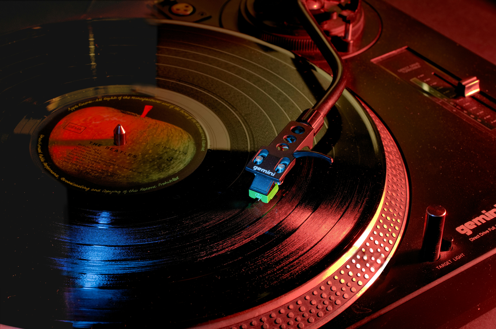
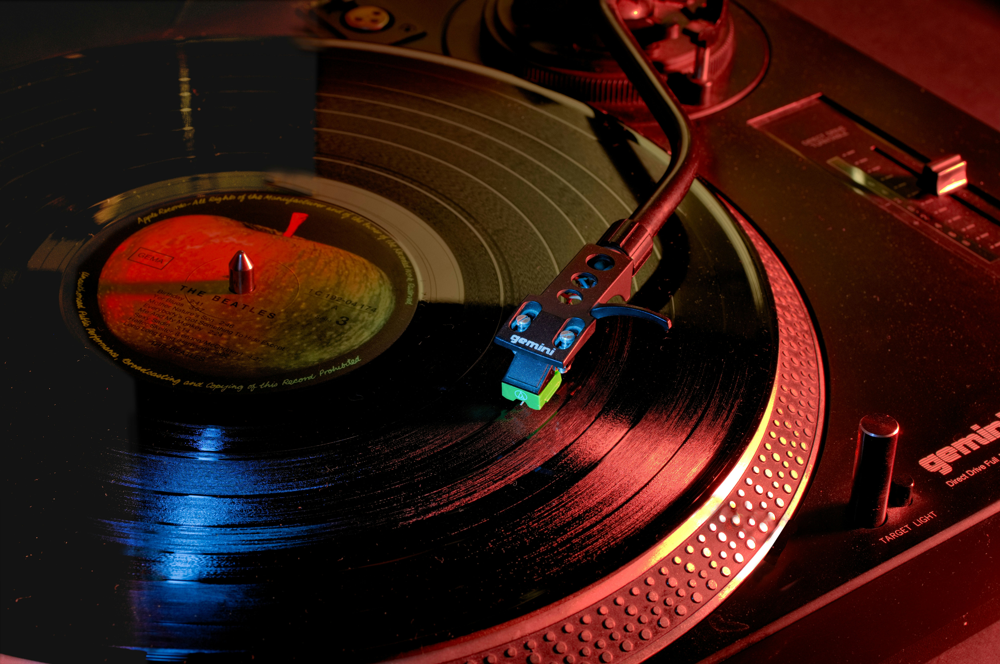

Tema 3
Grundlæggende UX/UI
Beskrivelse af temaforløb
Temaforløb 3 var en introduktion til samspillet mellem brugere og digitale brugergrænseflader (UI). Vi skulle lære grundlæggende teorier, metoder og værktøjer til research, design og test i digital produktudvikling. Fokuset lå i at basere designvalg på konkrete brugerindsigter frem for antagelser. Formålet var at give os, studerende, erfaring med UX/UI-metoder, lære os at dokumentere vores designproces og formidle research- og testresultater.
Afleveringer
Aflevering 03.01.01 - Emnesite
I aflevering 03.01.01 lærte jeg at designe og udvikle et responsivt website fra idé til færdig løsning. Jeg har arbejdet med research, wireframes, digitale prototyper i Figma, og kodning med HTML og CSS. Derudover har jeg fået erfaring med visuelle designvalg.
Reflektioner over tema 3
I tema 3 lærte jeg om UX/UI og designede et website om musikbegivenheder i nærområdet. Jeg arbejdede med research, idéudvikling, visuel research (moodboard og styletile) og lavede en klikbar prototype i Figma. Derefter udviklede jeg et kodet site baseret på prototypen og præsenterede det via et slideshow. Jeg lærte grundlæggende metoder, principper og teknologier til design af digitale brugeroplevelser.
 
